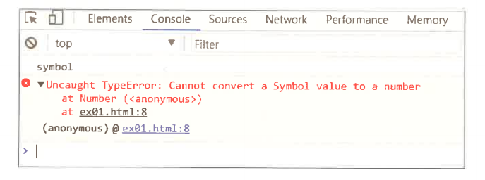
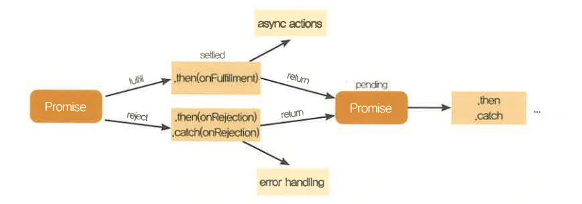

- 심볼(Symbol)은 ES6에서 새로 추가된 유형(type)이며, 객체의 속성으로 사용된다. 객체의 속성으로 심볼을 사용하는 이유는 내장 속성과의 충돌을 피하기 위함이다. 객체 내장 속성과 같은 이름의 속성을 추가하면 내장 속성이 덮어 씌워져 더 이상 사용할 수 없다. 의도된 것이 아니라면 객체 내장 속성 이름과 추가할 속성의 이름이 충돌하지 않도록 해야 하는데, 그러기 위해선 내장 속성명을 조회해 보고 추가해야 할것이다. 심볼을 사용하면 이러한 불편함을 해결할 수 있다.
- 먼저 심볼을 생성하는 방법이다. 심볼은 new 연산자를 사용하지 않으며, Symbol 함수를 호출하여 선언한다.
let symbol = Symbol(description)
| description | 단순히 디버깅 용도이며, 구분자 역할은 하지 못함 |
|---|
- description 인자는 심볼을 구분해 내지 못하는데, 그 이유는 심볼은 함수 호출 시 매번 새로운 심볼을 생성해내기 때문이다. 아래 같은 description을 추가한 심볼을 비교해보자.
Symbol('foo') === Symbol('foo'); // 결과는 false, 서로 다른 심볼
- description은 단순히 디버깅 시 출력용이다. 심볼을 console로 출력해 보면 Symbol(description) 형태로 출력된다. 다음 코드는 심볼을 출력해 보았다.
let symbol = Symbol('foo');
console.log(symbol); // 결과는 Symbol(foo)
- 객체에 속성 추가 시 내장 속성과 같은 이름의 속성을 추가하면 내장 속성을 덮어 씌우게 된다. 다음 코드는 배열의 내장 속성을 덮어 씌우는 예 이다.
let arr = [1, 2, 3]; console.log(arr.length); // 결과는 3, length 배열의 원소 수를 조회할 수 있는 내장 속성 arr.length = 100; // 배열에 length 속성을 정의 console.log(arr.length); // 결과는 100, 배열의 내장 속성이 덮어씌워 졌음
- 내장 속성을 변경하는 것은 개발자로 하여금 큰 혼돈을 주게 된다. 배열 원소수를 얻으려 할 때 원치 않는 결과를 얻게 되기 때문이다. 심볼을 이용하여 이 문제를 해결해 보자.
let arr = [1, 2, 3];
const length = Symbol('length'); // 심볼을 선언
arr[length] = 100; // 배열에 심볼을 속성으로 추가
console.log(arr[length]); // 결과는 100
console.log(arr.length); // 결과는 3, 내장 속성이 그대로임
- 배열에 속성을 추가할 경우 for...in 반복문에 속성도 함께 포함된다. for...in 문으로 배열을 순회하는 이유는 배열의 원소를 얻기 위함인데, 속성까지 읽힌다면 원치 않는 결과를 얻게 된다. 아래 그 예를 살펴보면
let arr = [1, 2, 3];
arr.prop = 100;
for(let i in arr){
console.log(i); // 결과는 0, 1, 2, prop
} // 배열의 index외에 추가된 속성이 포함
- 심볼을 사용하면 for...in 반복문의 순회에 포함되지 않는다. 배열에 속성이 필요한 경우 원소의 순회를 방홰하지 않고 속성을 추가시켜 줄 수 있다. 다음은 그 예를 반영한 코드이다.
let arr = [1, 2, 3]; let prop = Symbol('prop'); arr[prop] = 100; for(let i in arr){ console.log(i); // 결과는 0, 1, 2 } // 배열의 index만 순회됨
- 심볼은 객체 내장 속성과의 충돌을 피하기 위해 새롭게 추가된 타입이다. 심볼은 배열에 속성으로 추가하더라도 for...in 문 순회에 포함되지 않는다.
- typeof 연산자를 이용하여 심볼의 유형을 확인해 보고, 심볼을 숫자형으로 변환해 보자. 다음 코드를 보면 typeof 연산자로 심볼의 유형을 확인한 후, Number 메서드로 심볼을 숫자형으로 변환 시도하였다.
ecma6\complete\chapter3\3-3\ex01.html | http://127.0.0.1:8887\chapter3\3-3/ex01.html
<!DOCTYPE html>
<html>
<head>
<title>심볼의 형변환 시도</title>
<script type="text/javascript">
let symbol = Symbol(); //심볼 생성
console.log(typeof symbol); //심볼 유형 확인
console.log(Number(symbol)); //심볼을 숫자형으로 변환
</script>
</head>
<body>
</body>
</html>
- 예제를 실행하여 브라우저 콘솔에서 결과를 확인해 보면 심볼의 유형은 symbol로 출력되며, 숫자형으로 변환 시 "Cannot convert a Symbol value to a number at Number", 즉 숫자로 변환할 수 없다는 오류 메세지가 출련된다.

- Promise는 지연 함수와 비동기 연산을 제어할 수 있도록 해주는 클래스이다. 비동기식 언어의 특성상 지연 함수 또는 비동기 연산이 종료되기 전에 아래쪽 구문이 실행되기 때문에 결과값을 활용하기가 까다롭고 코드 가독성이 떨어진다.
Promise는 지연 함수 또는 비동기 연산을 내부에서 처리 후 이행 여부에 따라 결과 또는 실패 원인만을 전달해 주는데 메서드 체인을 통해 코드 가독성을 높였다. 다음 코드의 예를 살펴보자.
var cnt = 0;
setTimeout(function(){
cnt++; // cnt를 1증가
},1000);
console.log(cnt); // 결과는 0 (지연 함수안의 구문보다 먼저 실행됨)
var cnt = 0;
setTimeout(function(){
receiveCount(++cnt); // cnt를 1증가하고, receiveCount 함수 호출
},1000);
function receiveCount($cnt){
cnt = $cnt;
console.log(cnt); // 결과는 1
}
let cnt = 0;
let promise = new Promise(function(resolve, reject){ // Promise 생성
setTimeout(function(){ // 지연함수를 Promise 내부에서 관리
cnt++;
resolve(cnt); // 결과값을 전달
},1000);
});
promise.then(function($cnt){
cnt = $cnt;
console.log(cnt);
});
- 먼저 Promise의 생성법을 살펴보자. Promise는 new 연산자 뒤에 Promise 함수를 호출하여 선언한다.
let promise = new Promise( /* executor */ function(resolve, reject){...});| executor(function) | Promise 객체 생성 시 전달 인자 콜백 함수이며, 인수인 resolve 함수와 reject 함수를 전달한다. executor 함수는 Promise 인스턴스 생성 시 바로 실행되며, 이행 여부를 결정하여 resolve 함수 또는 reject 함수를 호출한다. |
|---|
- Promise가 생성되면 executor 함수가 실행되며 내부에서 지연 함수 또는 비동기 연산을 기다리다(pending) 이행여부를 결정하여 이행(fulfill) 또는 거절(reject)을 생성자에 전달하는데, 이행일 경우 전달받은 resolve 함수를 호출하며 인자로 결과값(value)을 전달하고, 거절인 경우 전달받은 reject 함수를 호출하며 인자로 거절 이유(reason)를 전달한다.
- 전달된 결과가 이행일 경우 생성자의 then 메서드 호출 시 이행 결과값이 인수로 전달받으며, 거절일 경우 catch 메서드 인수 또는 then 메서드의 두 번째 인수로 값을 전달받는다.
- then과 catch 메서드는 모두 호출 뒤에 다시 생성자 Promise를 반환한다. 다음 그림은 Promise가 실행되는 과정이다.

- 코드를 예로 좀 더 살펴보면 Promise를 생성하고 executor 함수 내부에 지연 함수를 실행한 뒤 이행을 결정하여 resolve 함수를 호출하고 결과값을 전달한다. 전달된 결과값은 them 메서드 호출 시 인수가 된다.
let promise = new Promise(function(resolve, reject){ // Promise 생성
// 전달인자로 executor 함수를 참조하고, 인수인 resolve와 reject 함수를 전달받음
setTimeout(function(){ // 지연함수를 Promise 내부에서 관리
resolve('success'); // 1초뒤에 이행 결정인 resolve 함수를 호출
},1000);
});
promise.then(function(value){ // 이행 결정시 then 메서드 인수를 통해 결과값을 전달받음
console.log(value); // 결과는 'success'
});
- 다음은 위와 같은 상황에서 이행을 거절하는 reject 함수를 호출하여 거절 이유를 전달하여, catch 메서드 호출 시 인수를 통해 전달받도록 하는 예를 살펴보자.
let promise = new Promise(function(resolve, reject){ // Promise 생성
setTimeout(function(){
reject('failed'); // 1초뒤에 이행 거절인 reject 함수를 호출
},1000);
});
promise.then(function(value){ // 이행이 거절되었으므로 호출되지 않음
console.log(value);
});
promise.catch(function(reason){ // 이행 거절시 catch 메서드 인수를 통해 거절 이유를 전달받음
console.log(reason); // 결과는 'failed'
});
- 다음은 Promise 메서드를 정리한 표이다.
| then(onFulfilled, OnRejected) | 이행 또는 이행 거절이 되었을 때 인수인 콜백 함수 호출을 받는다. 첫 번째 인수 onFulfilled는 이행되었을 때 호출받는 콜백 함수이며, 인수에 이행 결과를 전달 받는다. 두 번째 인수 onFejcted는 이행 거절이 되었을 때 호출받는 콜백 함수이며, 인수에 거절 이유를 전달 받는다. |
|---|---|
| catch(onRejeced) | onRejected는 이행 거절이 되었을 때 호출 받는 콜백 함수이며, 인수에 거절 이유를 전달받는다. |
| Promise.all(iterable) | all 메서드는 한 번에 여러 Promise 생성자의 이행 결과를 모아 전달해 준다. |
| Promise.race(iterable) | race 메서드는 여러 Promise 생성자를 경합하여 가장 빠른 Promise 생성자의 이행 결과를 전달한다. 인수인 iterable은 여러 Promise 생성자를 항목으로 하여, 그 중 가장 빨리 이행 결정된 결과만 전달한다. 이때 하나라도 이행 거부되면 중지하고 이행 거부 이유를 전달한다. |
- Promise.all 메서드는 한꺼번에 여러 Promise 생성자의 이행 결과를 모아 전달해 준다. 인수인 iterable은 여러 Promise 생성자를 항목으로 하여, 열거순으로 Promise의 이행 결과를 모두 배열에 담아 전달한다. 이때 하나라도 이행 거부되면 중지하고 이행 거부 이류를 전달한다.
- 다음 코드 예를 살펴보면 두 개의 Promise를 생성하여 각각 지연 함수의 시간을 다르게 한 뒤 배열에 담아 Promise.all 메서드 호출 시 인자로 하였다.
두 Promise는 지연 함수에 의해 서로 다른 시간에 이행 결정이 되지만 시간과는 상관없이 이터러블 객체의 열거 순서에 따라 결과값이 배열로 전달된다.
let p1 = new Promise(function(resolve, reject){ // 첫 번째 promise 생성
setTimeout(function(){
resolve('p1 fulfilled'); // 2초뒤 이행 결정
},2000);
});
let p2 = new Promise(function(resolve, reject){ // 두 번째 promise 생성
setTimeout(function(){
resolve('p2 fulfilled'); // 1초뒤 이행 결정
},1000);
});
let iterable = [p1, p2]; // p1, p2 순으로 열거되는 이터러블 생성
// Promise.all 메서드를 호출하고, 인자 iterable을 전달
Promise.all(iterable).then(function(value){
console.log(value); // 결과는 ['p1 fulfilled', 'p2 fulfiled']
},function(reason){ // 모두 이행이므로 호출되지 않음
console.log(reason);
});
- 위의 결과에서 알 수 있듯 p2의 이행 결정이 빠르지만 iterable의 열거 대상인 모든 Promise에서 이행 결정이 된 뒤에 열거순으로 결과값을 배열로 전달함을 볼 수 있다.
- Promise.race 메서드는 여러 Promise 생성자를 경합하여 가장 빠른 Promise 생성자의 이행 결과를 전달한다. 인수인 iterable은 여러 Promise 생성자를 항목으로 하며, 그 중 가장 빨리 이행 결정된 결과만 전달한다. 이때 하나라도 이행 거부되면 중지하고 이행 거부 이유를 전달한다.
- 다음 코드 예를 살펴보면 두 개의 Promise를 생성하여 각각 지연 함수의 시간을 다르게 한 뒤, 배열에 담아 Promise.race 메서드 호출 시 인자로 하였다. 두 Promise의 열거 순서는 p1이 빠르지만, 이행 시간은 p2가 빨라 이행 결과는 p2만 전달되었음을 알 수 있다.
let p1 = new Promise(function(resolve, reject){ // 첫 번째 promise 생성
setTimeout(function(){
resolve('p1 fulfilled'); // 2초뒤 이행 결정
},2000);
});
let p2 = new Promise(function(resolve, reject){ // 두 번째 promise 생성
setTimeout(function(){
resolve('p2 fulfilled'); // 1초뒤 이행 결정
},1000);
});
let iterable = [p1, p2]; // p1, p2 순으로 열거되는 이터러블 생성
// Promise.race 메서드를 호출하고, 인자 iterable을 전달
Promise.race(iterable).then(function(value){
console.log(value); // 결과는 'p2 fulfiled'
},function(reason){ // 모두 이행이므로 호출되지 않음
console.log(reason);
});
- 이번 장에서는 promise에 대해서 살펴보았다. 다음은 기존 방법과 비교하여 promise를 사용하였을 때 얻을 수 있는 장점에 대해서 정리한 표이다.
| 비동기 연산 또는 지연 함수 결과 활용 | 코드 가독성 | |
|---|---|---|
| promise 사용 시 장점 |
비동기 연산 또는 지연 함수 호출 뒤 얻어지는 결과를 executor 함수에서 전달받아 필요한 시점에 사용할 수 있어 타이밍 조절이 쉽다. | executor 함수에서 전달받은 결과를 이행 결정(fulfill) 또는 이행 거절(reject) 함수를 통해 전달되며, 체이닝 형태로 제공하므로 코드 가독성이 이전보다 좋아졌다. |
- 이번 예제에서는 미리 작성해둔 Ajax 비동기 연산의 Promise를 생성하여 이행 결과를 보고 받고, 그 결과를 then 메서드 호출 시 전달받는 구문을 작성해보자. 예제에서는 AJAX를 사용하므로 서버 환경에서 실행하거나, localhost 등을 설정하여 실행해야 하는데 chapter 1~2 환경 설정을 참고하면 된다.
- 먼저 작성된 코드를 살펴보면 XMLHttpRequest 객체를 생성하여 data.html 파일을 불러오고 있다. 파일 불러오기에 성공하였다면 데이터를 body 태그에 추가해 주고, 실패했다면 그 원인을 console에 출력하도록 한다.
- 다음 예제에 Promise를 생성하여 비동기 연산의 결과를 보고 받고, 이행 결과를 전달하도록 코드를 추가해 본다.
- 주의 : chrome sever 환경에서 실행하고 data.html 파일이 있는지 확인
ecma6\example\chapter3\3-4\ex01.html | http://127.0.0.1:8887/ex03_31.html
<!DOCTYPE html>
<html>
<head>
<title>Promise</title>
<style>
body h1{font-size: 24px; color:red;}
</style>
<script type="text/javascript">
let req = new XMLHttpRequest();
req.open('GET', 'data.html');
req.send();
req.onreadystatechange = function(){
if(req.readyState == req.DONE){
if(req.status == 200){
// Ajax 호출 성공시 body에 데이터 추가
document.body.innerHTML = req.response;
} else {
// Ajax 호출 실패 원인 출력
console.log(req.statusText);
}
}
}
</script>
</head>
<body>
</body>
</html>
- 다음과 같이 코드를 추가한다. Promise를 생성하고 executor 함수에서 Ajax 비동기 연산 처리를 한다.
- 데이터 불러오기 성공 시 이행 결정을 하여, resolve 함수를 호출하고 이행 결과인 데이터를 전달한다.
- 데이터 불러오기에 실패한다면 이행을 거절하는 reject 함수를 호출하고 거절 이유로 Ajax 실패 원인을 전달한다.
- Promise.them 메서드에서 이행 결과와 거절 이유를 전달받도록 추가해 준다.
ecma6\complete\chapter3\3-4\ex01.html | http://127.0.0.1:8887\chapter3\3-4/ex01.html
<!DOCTYPE html>
<html>
<head>
<title>Promise</title>
<style>
body h1{font-size: 24px; color:red;}
</style>
<script type="text/javascript">
// Promise 생성 후 executor 함수에서 Ajax 호출이 되도록 변경
let promise = new Promise(function(resolve, reject){
let req = new XMLHttpRequest();
req.open('GET', 'data.html');
req.send();
req.onreadystatechange = function(){
if(req.readyState == req.DONE){
if(req.status == 200){
// Ajax 호출 성공 시 이행 결정, resolve 함수를 호출하여 이행 결과를 전달
resolve(req.response);
} else {
// Ajax 호출 실패 시 이행 거절, reject 함수를 호출하여 거절 이유를 전달
reject(req.statusText);
}
}
}
});
// 이행 결과를 전달 받음
promise.then(function(value){
document.body.innerHTML = value;
// 이행 거절 이유를 전달 받음
}, function(reason){
console.log(reason);
});
</script>
</head>
<body>
</body>
</html>
- 결과를 확인하기 위하여 작성된 코드를 실행시키면, AJAX SUCCESS 텍스트가 출력
- 프록시(Proxy)는 객체에서 일어나는 일을 관찰한다. 사용자가 객체의 속성을 조회하거나, 할당, 열거, 호출 등을 할 때 관찰 중이던 프록시가 먼저 이를 알고 객체의 진행을 결정한다.
- 이렇듯 런타임에서 동작하기 이전에 동작하도록 하는 것을 '메타 프로그래밍'이라 하는데, 객체에서 일어나는 일의 로그를 남기거나 디버깅의 용도로 유용하다.
- 프록시의 생성법을 살펴보면 프록시는 new 연산자 뒤에 Proxy 함수를 호출하여 선언한다.
let proxy = new Proxy(target, handler);
| target | 프록시의 관찰 대상이 될 객체 |
|---|---|
| handler | 객체의 동작 가로챔을 실행하는 함수들을 트랩(trap)이라고 하며, handler는 trap을 속성으로 갖는 객체임 |
- 다음 코드 예는 target 객체를 관찰하는 프록시를 생성하고, set trap을 handler의 속성으로 추가하여, target 객체의 속성이 추가 될 때, 동작을 가로 채도록 작성하였다.
let target = {};
let handler = {
// set trap(target 객체의 속성이 추가되면 호출)
set:function(target, key, value, receiver){
// 추가한 속성인 'name', 'my proxy' 가 출력됨
console.log(key, value);
return Reflect.set(target, key, value, receiver);
}
};
let proxy = new Proxy(target, handler);
proxy.name = 'my porxy';
// 결과는 {name: 'my proxy'}
console.log(target);
- 위 예의 두 log 출력 중 trap 함수안의 log가 먼저 출력된다. 프록시의 set trap이 target 객체의 속성 추가를 기다리다 동작을 가로챈 뒤 속성이 추가 되도록 정의해 주었기 때문이다. 여기서 주의 깊게 보아야 할 것은 *Reflect이다.
|
참고) Reflect는 trap과 동일한 API를 정적 메서드로 갖으며, trap이 객체의 동작을 가로챈 뒤 Reflect에 의해 target 객체의 동작을 속행한다.
참고) 클래스메소드(정적메소드)란? 정적 메서드는 클래스 종속적인 메서드를 말한다. 정적 메서드는 설계도인 클래스에 선언되어 있지만 인스턴스를 만들때 포함되지 않는다. 또한 메모리에 로드되는 시점도 비정적 메서드... 즉 인스턴스 측 메서드와 달리 인스턴스메서드는 객체를 생성하는 시점... 즉 new 연산자를 사용해서 메모리에 로드되는 시점에 같이 로드되는 반면 정적 메서드는 프로그램이 실행되어 시작되기 바로 전에 모두 메모리에 로드된다. 어떤 메서드가 실행이 되려면 메모리에 우선 로드되어야 하는데 위에서 설명한 차이로 인해 정적메서드는 인스턴스 생성을 하지 않고도 클래스명을 사용하여 바로 실행이 가능하다. 이에반해 인스턴스 메서드는 new 연산자를 통해 인스턴스가 생성되고 나면 실행이 가능하다. |
- trap은 총 13가지가 존재하며, 각각의 역할이 주어진다. 다음은 각 트랩의 역할을 정리한 표이다.
| getPrototypeOf | 객체에 등록된 프로토타입 속성을 얻으려 할 때 |
|---|---|
| setPrototypeOf | Object.setPrototypeOf 메서드 호출 시(객체에 새로운 프로토타입 속성을 설정) |
| isExtensible | Object.isExtensible 메서드 호출 시(객체에 새로운 속성이 추가 가능한지 여부 확인) |
| proventExtensions | Object.preventExtensions 메서드 호출 시(객체에 새로운 속성이 추가되지 못하도록 설정) |
| defineProperty | Object.defineProperty 메서드 호출 시(객체에 설명자가 있는 속성 추가) |
| getOwnPropertyDescriptor | Object.getOwnPropertyDescriptor 메서드 호출 시(객체 자신의 속성에 대한 설명자 조회) |
| has | 객체에 in 연산자 수행 시(객체가 명시한 속성을 지니는지 확인) |
| get | 객체의 속성값을 얻을 시 |
| set | 객체의 속성값 추가 시 |
| deleteProperty | 객체에 delete 연산자 수행 시(객체의 속성 삭제) |
| ownKeys | 객체가 지닌 속성키 조회 시 |
| apply | 함수에 call 또는 apply 메서드 호출 시 |
| construct | 객체에 new 연산자 수행 시 |
- getPrototypeOf 트랩은 객체에 등록된 프로토타입 속성을 얻으려 할 때 이를 가로채 진행 여부를 결정한다. 매개변수 target은 타깃 객체이다. 반환값은 진행 여부에 따라 진행일 경우 프로토타입 객체를 진행하지 않을 경우 null값을 반환해 준다. 다음 코드 예를 살펴보면
function foo(){}
foo.prototype.a = 100; // 함수 foo에 프로토타입 속성 a 추가
foo.prototype.b = 200; // 함수 foo에 프로토타입 속성 b 추가
let obj = new foo(); // new 연산자를 수행하여 프로토타입 속성을 참조한 객체를 생성
let proxy = new Proxy(obj, { // Proxy 객체를 생성하고 타겟 객체를 참조
getPrototypeOf:function(target){ // 트랩 설정
console.log(' 트랩 호출 ');
// 타겟의 프로토타입 속성을 반환
return Reflect.getPrototypeOf(target); // 타겟의 트로토타입 속성을 반환
}
});
let proto = proxy.__proto__; // 객체의 프로토타입 속성을 얻기
console.log(proto); // 결과는 객체의 프로토타입 {a:100, b:200}
- 객체로부터 프로토타입 속성을 얻으려 할 때 트랩이 이를 가로채어 '트립 호출' 로그를 출력하고, Reflect.getPrototypeOf 메서드를 호출하여 타깃 객체의 프로토타입 속성을 반환해 진행 결정을 내린다. 그 뒤 전달된 프로토타입 속성이 출력된다.
- setPrototypeOf 트랩은 객체에 프로토타입 속성을 설정해주는 Object.setPrototypeOf 메서드 동작을 가로채 진행 여부를 결정
- 매개변수 target은 타깃 객체이며, prototype은 설정할 프로토타입 객체이다. 반환값은 타깃 객체 프로토타입 설정 여부에 따라 true 또는 false가 된다. 다음 코드 예를 살펴보면
let obj = {};
let proxy = new Proxy(obj, {
// 트랩 설정
setPrototypeOf:function(target, proto){
// 전달된 프로토타입 객체를 타겟 객체에 설정
let bool = Reflect.setPrototypeOf(target, proto);
// 결과는 true (프로토타입 속성이 설정됨)
console.log(bool);
// 설정 여부를 반환
return bool;
}
});
// 객체 프로토타입에 속성을 설정
let p = Object.setPrototypeOf(proxy, {a:100, b:200});
// 반횐된 설정 여부가 true이므로 결과는 {a:100, b:200}
console.log(p.__proto__);
- isExtensible 트랩은 객체에 새로운 속성을 추가 가능 여부를 확인하는 Object.isExtensible 메서드 동작을 가로채 진행 여부를 결정한다. 매개변수 target은 타깃 객체이다. 반환값은 타깃 객체에 새로운 속성 추가 가능 여부에 따라 true 또는 false가 된다. 다음 코드 예를 살펴보면
let obj = {};
let proxy = new Proxy(obj, {
// 트랩 설정
isExtensible:function(target){
// 객체에 새로운 속성 추가 가능 여부 반환
return Reflect.isExtensible(target);
}
});
// 객체 새로운 속성 추가 가능 여부 확인
let bool = Object.isExtensible(proxy);
// 트랩에서 반환된 결과는 true
console.log(bool);
- preventExtensions 트랩은 객체에 새로운 속성이 추가되지 못하도록 정의를 내리는 Object.preventExtensions 메서드 동작을 가로채 진행 여부를 결정한다. 매개변수 target은 타깃 객체이다. 반환값은 새로운 속성이 추가되지 못하도록 정의된 객체이다. 다음 코드 예를 살펴보면
let obj = {};
let proxy = new Proxy(obj, {
// Object.preventExtensions 동작을 가로챌 트랩
preventExtensions:function(target){
return Reflect.preventExtensions(target);
}
});
// 객체에 새로운 속성이 추가되지 못하도록 설정
Object.preventExtensions(proxy);
// 객체 새로운 속성 추가 가능 여부 확인
let bool = Object.isExtensible(proxy);
// 트랩에서 반환된 결과는 false
console.log(bool);
- defineProperty 트랩은 설명자(descriptor)가 있는 속성을 추가하는 Object.defineProperty 메서드 동작을 가로채 진행 여부를 걸정한다. 매개변수 target은 타깃 객체이고, prop는 속성명, descriptor는 객체 설명자이다. 반환값은 성공적으로 속성이 추가되었는지 여부이다. 다음 코드 예를 살펴보면
let obj = {};
let proxy = new Proxy(obj, {
// 트랩 설정
defineProperty:function(target, prop, descriptor){
// 속성 추가를 진행
Reflect.defineProperty(target, prop, descriptor);
// 속성 추가 여부를 반환
return true;
}
});
// 객체에 설명자(descriptor)가 있는 속성 추가
Object.defineProperty(proxy, 'key',{
enumerable: false,
configurable: false,
writable: false,
value: 'static'
});
// 속성 추가 여부에 따라 속성이 추가됨, 결과는 {key: 'static'}
console.log(proxy);
- getOwnPropertyDescriptor 트랩은 객체 속성의 설명자(descriptor)를 읽는 Object.getOwnPropertyDescriptor 메서드 동작을 가로채 진행 여부를 결정한다. 매개변수 target은 타깃 객체이고, prop는 속성명이다. 반환값은 설명자(descriptor) 또는 undefined이다. 다음 코드 예를 살펴보면
let obj = {};
// 객체에 설명자(descriptor)가 있는 속성 추가
Object.defineProperty(obj, 'key',{
configurable: true,
enumerable: true,
value: 10
});
let proxy = new Proxy(obj, {
// 트랩 설정
getOwnPropertyDescriptor:function(target, prop){
// 속성 설명자 반환
return Reflect.getOwnPropertyDescriptor(target, prop);;
}
});
//객체에 설명자가 있는 속성 얻기
let descriptor = Object.getOwnPropertyDescriptor(proxy, 'key');
// 결과는 트랩에서 전달받은 객체에 추가된 속성 설명자
// {configurable: true, enumerable: true, value: 10}
console.log(descriptor);
- has 트랩은 in 연산자 동작을 가로채 진행 여부를 결정한다. 매개변수 target은 타깃 객체이고, prop는 속성명이다. 반환값은 진행 여부에 따라 true 또는 false이다. 다음 코드 예를 살펴보면
let obj = {a: 100, b: 200};
let proxy = new Proxy(obj, {
// 트랩 설정
has:function(target, prop){
let result = Reflect.has(target, prop);
// 속성 존재 여부 결과를 반환
return result;
}
});
//in 연산자로 객체에 속성 존재 여부 확인
let bool = 'a' in proxy;
// 결과는 true, 트랩으로부터 전달받음
console.log(bool);
- get 트랩은 객체의 속성값을 얻으려할 때 동작을 가로채 진행 여부를 결정한다. 매개변수 target은 타깃 객체이고, prop는 속성명, receiver는 프록시 또는 프록시를 상속받은 객체이다. 반환값은 모든 값이 될 수 있다. 다음 코드 예를 살펴보면
실행 : http://127.0.0.1:8887/ex03_40.html : 책은 예문이 잘못되어 있음
const arr = new Proxy([1,2,3], {
get(target, prop, receiver){
if(prop in target){
return target[prop]
} else {
console.log(`${prop}은 존재하지 않습니다.`)
return 0
}
}
});
console.log(arr[0]) // 1
console.log(arr[1]) // 2
// 100은 존재하지 않습니다.
console.log(arr[100]) // 0
- set 트랩은 객체의 속성값을 설정하려할 때 동작을 가로채 진행 여부를 결정한다. 매개변수 target은 타깃 객체이고, prop는 속성명, value는 속성값, receiver는 프록시 또는 프록시를 상속받은 객체이다. 반환값은 객체 속성값 설정 성공 여부에 따라 true 또는 false이다. 다음 코드 예를 살펴보면
실행 : http://127.0.0.1:8887/ex03_41.html : 책은 예문이 잘못되어 있음
const arr = new Proxy([],{
// 트랩 설정
set:function(target, prop, value, receiver){
if(typeof value === 'number'){
target[prop] = value
return true
} else {
return false
}
}
});
arr.push(1)
arr.push(2)
arr.push(3)
// 아래 부분을 주석을 달면 위 3개는 정상적으로 push()가 일어난다.
// 하지만 Proxy를 써서 성공적으로 push를 막은 것을 확인할 수 있다.
arr.push('졸려')
// console.log([...arr])은 배열객체를 나열해서 보여준다.
console.log([...arr])
- deleteProperty 트랩은 delete 연산자로 객체의 속성을 삭제하려고 할 때 동작을 가로채 진행 여부를 결정한다. 매개변수 target은 타깃 객체이고, prop는 속성명이다. 반환값은 속성 삭제 여부에 따라 true 또는 false이다. 다음 코드 예를 살펴보면
let obj = {a:100};
let proxy = new Proxy(obj, {
// 트랩 설정
deleteProperty:function(target, prop){
Reflect.deleteProperty(target, prop); // 객체 속성 삭제 진행
return true; // 성공적 삭제 결과를 알려줌
}
});
let val = delete proxy.a; // 객체 속성 삭제 시 트랩 호출
console.log(val); // 결과는 true
- 이번 장에서는 프록시에 대해서 살펴보았다. 프록시는 객체의 속성을 관찰하다 변화가 있을 경우 객체보다 먼저 알아내는데 이것은 컴파일 수준에서 가능한 일이며, 다른 API와는 다른 새로운 개념의 메타 프로그램이다. 프록시를 이용하여 객체 속성의 변화에 따른 로그를 남기는 등의 활용이 가능할 것이다.
- 프록시를 사용하여 작성된 target 객체의 속성을 읽기 전용으로 만들어 본다. 단, 객체에 속성을 추가하는 방법은 obj.prop 또는 obj['prop']의 형태만 사용한다는 가정 하게 진행한다. 작성은 간단하게 target 객체를 타깃으로 하는 프록시를 생성하며 set 속성이 되지 않도록 해주면 된다. 다음 코드에 록시를 추가해 주도록 한다.
<!DOCTYPE html>
<html>
<head>
<title>프록시(Proxy)</title>
<style>
body h1{font-size: 24px; color:red;}
</style>
<script type="text/javascript">
const target = {
author:'kim',
version:'1.0',
text:'read only property'
};
</script>
</head>
<body>
</body>
</html>
- 다음과 같이 작성해 준다. target 객체를 인자로 하는 프록시를 생성하고, set 속성을 추가하여 오류 메시지를 출력한다. 그럼 속성을 추가할 때마다 오류 메시지가 출력되고, 속성은 추가되지 않는 읽기 전용 속성이 된다.
ecma6\complete\chapter3\3-5\ex01.html | http://127.0.0.1:8887\chapter3\3-5/ex01.html
<!DOCTYPE html>
<html>
<head>
<title>프록시(Proxy)</title>
<script type="text/javascript">
const target = {
author:'kim',
version:'1.0',
text:'read only property'
};
// target 객체를 인자로 하는 Proxy 생성
const proxy = new Proxy(target, {
// set이 되면 error가 출력되도록 작성
set:function(){
throw new Error('This is a read-only property.');
}
});
// text 속성을 조회
console.log(proxy.text);
// text 속성을 수정
proxy.text = 'new text';
</script>
</head>
<body>
</body>
</html>
- 이제 완성된 결과를 출력하면, 속성 조회는 가능하지만 속성을 변경하자 "This is a read-only property" 메시지가 출력되면서 오류가 발생한다.